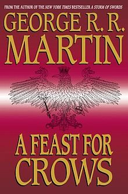

Gozba za vrane
Gozba za vrane je èetvrta od sedam planiranih romana u epske fantastike serije Pesma leda i vatre amerièkog pisca Džordža R. R. Martin. Roman je prvi put objavljen 17. oktobra, 2005. godine, u Velikoj Britaniji, s Sjedinjenih Amerièkih Država izdanju sledeæem 8. novembra 2005.
U maju 2005. godine Martin je objavio da je "ogromna velièina" njegovog još uvek nedovršenom rukopisu za gozba za vrana je njega i njegove izdavaèe dovelo do podeliti naraciju u dve knjige. Umesto da dele tekst na pola hronološki Martin odluèili da umesto toga podeliti materijal po karakteru i lokacije, što dovodi do "dva romana odvija istovremeno" sa razlièitim odlivaka likova.Gozba za vrane je objavljen meseci kasnije, a istovremeno roman plesu sa Dragons je pušten 12. jula, 2011. Martin takoðe napomenuti da je Pesma leda i vatre serija æe sada verovatno ukupno sedam romana.
Gozba za vrane je prvi roman u seriji æe debitovati na broj jedan na listi Nev Iork Timesa bestseler, podvig meðu fantasi pisaca samo ranije postignutih Robert Jordan i Neil Gaiman. U 2006. godini roman je nominovan za nagradu Hugo, locus nagradu, a nagrada Britanske Fantasi društva. Od tada je adaptiran, uz Dance Vith Dragons, za televiziju kao peti sezoni Game of Thrones, iako elementi romana pojavio u èetvrtom i šestom sezone serijala.